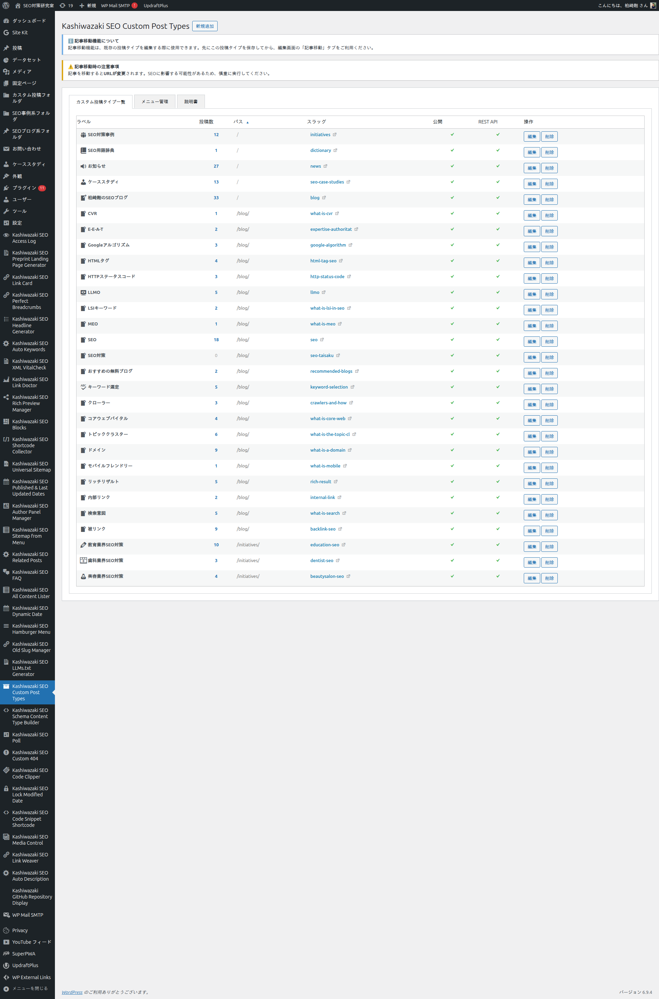
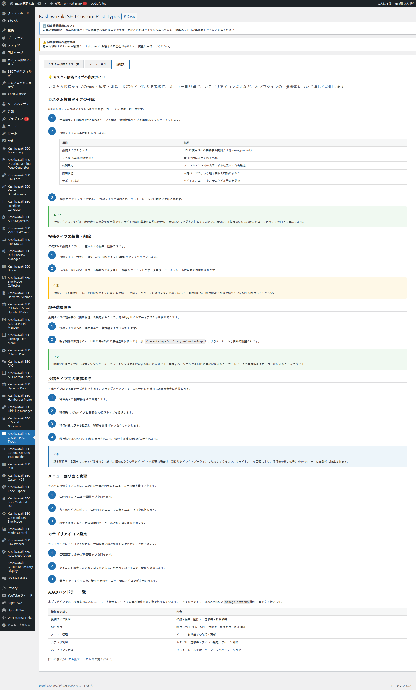

インストール・初期設定
プラグインのインストールから、管理画面への入口確認、初期データベースの作成、最初のカスタム投稿タイプを作成する準備までを、ステップバイステップで解説します。
インストール手順
プラグインファイル一式を /wp-content/plugins/kashiwazaki-seo-custom-post-types/ ディレクトリにアップロードします。GitHub からクローンする場合はディレクトリ名が一致するよう注意してください。
WordPress 管理画面の プラグイン メニューを開き、「Kashiwazaki SEO Custom Post Types」を有効化します。
有効化すると、左メニューに 「Kashiwazaki SEO Custom Post Types」 という項目が追加されます。このメニューから管理画面にアクセスできます。

プラグイン有効化と同時に、データベーステーブル wp_kstb_post_types（投稿タイプ定義）と wp_kstb_menu_categories（メニューカテゴリー定義）が自動で作成されます。手動での SQL 実行は不要です。
ヒント
メニュー項目が表示されない場合は、一度 WordPress の管理画面をリロードしてください。プラグインによっては初回起動時にキャッシュが残ることがあります。
管理画面の構成

管理画面は以下の 3 つのメインタブで構成されます。
カスタム投稿タイプ一覧
作成済みの投稿タイプがテーブル形式で表示され、ここから新規作成・編集・削除・再登録・記事移行などの操作が可能。デフォルトで開くタブ。
メニュー管理
カスタム投稿タイプを「カテゴリー」でフォルダ化し、管理画面サイドメニューに整理表示するための設定タブ。
説明書
カスタム投稿タイプの作成ガイド。プラグインマニュアル（docs/）と同一のコンテンツを動的に読み込むことで、常に最新の解説を表示する。


初期確認項目
インストール直後に以下の項目を確認しておくと、後の作業がスムーズになります。
パーマリンク設定の確認 - 設定 > パーマリンク設定 で「投稿名」形式（または「カスタム構造」で /%postname%/）が選択されていることを確認してください。デフォルトの「基本」形式（?p=123）では、本プラグインの階層 URL 機能は動作しません。
権限の確認 - カスタム投稿タイプの作成・編集・削除、メニュー管理、記事移行など、プラグインの設定系操作には manage_options（管理者権限）が必要です。投稿編集画面内の親ページ選択は edit_post 権限、親ページ検索 AJAX は edit_posts 権限で動作するため、編集者権限のユーザーでも投稿編集側の機能は利用できます。
PHP バージョンの確認 - ツール > サイトヘルス > 情報 で PHP のバージョンが 7.0 以上であることを確認してください。推奨は 7.4 以上です。
DOMDocument 拡張の確認 - 管理画面の「説明書」タブが docs/ ファイルを読み込むために PHP の DOMDocument 拡張を使用します。ほとんどの WordPress 環境ではデフォルトで有効ですが、最小構成の環境では サイトヘルス > 情報 > サーバー で DOM が有効かを確認してください。無効でもフォールバック表示されるためプラグイン本体の動作に影響はありません。
補足: 他プラグインとの併用について
本プラグインは WordPress 標準の register_post_type() を内部で使用しており、他のカスタム投稿タイプ系プラグイン（Custom Post Type UI、ACF 等）と直接の衝突はありません。ただし、同じスラッグで投稿タイプを登録するとどちらが優先されるかは登録タイミング次第となります。両方で同名の投稿タイプを定義しないようにしてください。
最初の投稿タイプを作成する前に
実際にカスタム投稿タイプを作成する前に、以下を決めておくとスムーズに設定を進められます。
| 決めておくべき項目 | 内容 |
|---|---|
| 公開 URL スラッグ（url_slug） | 実際の URL に表示される文字列。ユーザーが入力する唯一のスラッグ項目。最大 64 文字。SEO を意識した長めのキーワードも使用可能（例: seo-latest-news、product-catalog-2026）。 |
| 投稿タイプの内部名（slug） | ユーザーが直接入力する項目ではありません。管理フォームの hidden フィールドとして、入力された url_slug から自動生成されます（最大 20 文字に切り詰め）。register_post_type() に渡される WP 内部識別子として使われます。したがって決めておく必要があるのは url_slug だけ です。 |
| ラベル | 管理画面で表示される日本語名。「ニュース」「商品」「スタッフ」など。このラベルから 25 種以上の関連ラベルが自動生成されます。 |
| 親ディレクトリ（任意） | 階層 URL を構築する場合、親となる固定ページや他の CPT のスラッグ。例: blog を指定すると /blog/{url_slug}/{post_slug}/ の形式になる。 |
| 公開設定 | フロントエンドで表示するか、管理画面のみで使うか。非公開 CPT は URL でアクセスできなくなる。 |
| 階層構造 | 投稿同士に親子関係を持たせるか（固定ページのように）。有効にすると投稿編集画面で親ページを選択可能になる。 |
注意: スラッグは後から変更困難です
投稿タイプの内部スラッグ（slug）は一度決めると変更が困難です。変更する場合は、記事移行機能を使って新しい投稿タイプに記事を移動する必要があります。サイトのテーマ構造を事前に設計し、適切な命名を選んでください。
次のステップ
以上で初期確認は完了です。次は実際にカスタム投稿タイプを作成する手順を投稿タイプ管理ページで解説します。階層 URL の設計（テーマ → サブトピック → 個別記事の構造）から始めたい場合は階層 URL 設計ページを先に読むことを推奨します。